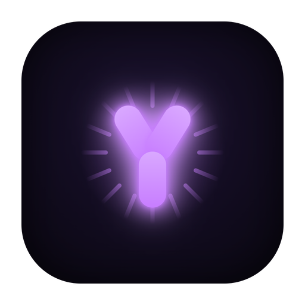

YASS
Your AI Speaking System
Gives your coding agents a voice. When Claude Code finishes a task, YASS speaks the result out loud: a visual queue, personas, and quality text to speech.
How it works
Runs on your machine. Audio is synthesized via the Fish Audio API, so a Fish Audio key is required.
Speaks your agent
The Claude Code Stop hook feeds each response to a local daemon that turns it into speech.
Personas
Jarvis, Pumba, Narrator, Hype: prompt and emotion presets that change the voice and tone.
Quality TTS
Fish Audio S2 voices, plus a public voice library you can search from the panel.
Visual queue
A real-time queue over SSE: what is playing, what is next, with a live waveform.
Pronunciation
A phonetic glossary applied before TTS, so names and jargon come out right.
Cross-platform
Desktop app built with Tauri. Installers for macOS, Windows, and Linux are built in CI.
Get started
git clone https://github.com/pedruino/yass.git cd yass && cp .env.example .env # add your FISH_API_KEY npm install cd app && npm install && npm run build && cd .. node yass-daemon.js # daemon + app at http://localhost:3891
Or grab a prebuilt installer from the latest release.